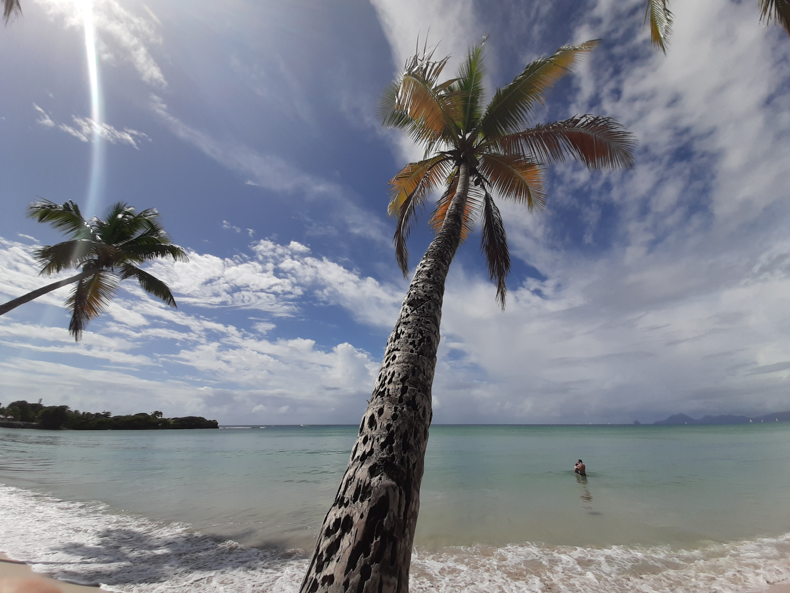

Este site é sobre as minhas experiências nas ilhas do arquipelago das Caraíbas. Entre os anos de 2018 e 2019!
Paisagens Litorais
| Prós e Contras | ||
|---|---|---|
| Apreciação Geral | Observações | Pontos Positivos |
| enrequecedor e acessível. Permite relachar e apreciar uma cultura/paisagens/forma de estar na vida e com o mundo diferente. | vento | Acessível Economicamente |
| água quente e limpa | ||
| fauna e flora (paisagens / cultura) | ||
| mudança de tempo repentina | viagens baratas se pesquisa feita |